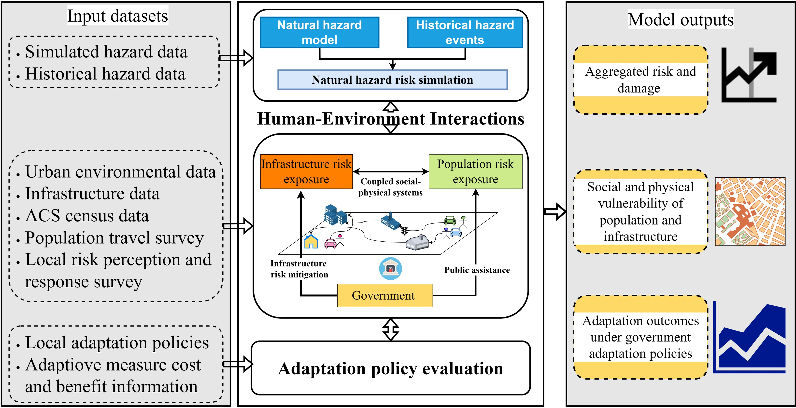

Climate Adaptation & Hazard Mitigation Planning
Catastrophic natural disasters present formidable challenges to build resilient communities. While the direct impacts of hazards such as floods, hurricanes, and landslides are well-documented, the indirect consequences—resulting from the complex interdependencies between natural systems and human infrastructure—are often overlooked or underestimated. These cascading risks can amplify disaster impacts, spreading across systems due to changes in hazard patterns, human exposure, economic shifts, and disruptions in supply chains. My research seeks to address these gaps by examining how such cascading effects propagate across social, environmental, and infrastructure systems.
To quantify these systemic risks, I leverage advanced agent-based models, computational methods, and open geospatial tools to analyze the impacts of compound hazards—such as storm surges and flooding—on vulnerable communities. By integrating open data and geoinformation techniques, my work contributes to the development of a robust framework for assessing and managing the interconnected risks posed by climate-driven extreme events.
In addition, my research explores the role of adaptation planning in reducing the vulnerability of urban and rural communities to climate change. With rapid urbanization and growing populations, the urgency for effective adaptation strategies has never been higher. Through interdisciplinary approaches and scenario analyses, I assess the effectiveness of various mitigation and adaptation policies. Using machine learning and artificial intelligence (AI), I simulate the impact of climate change and natural hazards on communities, aiming to provide actionable insights for policymakers. The ultimate goal is to identify and design strategies that enhance resilience, inform sustainable urban planning, and guide proactive adaptation in the face of climate uncertainty.

Refereed journal articles
Zan Wang, Shengwen Qi, Yu Han, Bowen Zheng, Yu Zou, Yue Yang (2024). Delimitation of Landslide Areas in Optical Remote Sensing Images across Regions via Deep Transfer Learning. IEEE Access.
Yu Han, Xinyue Ye, Chunwu Zhu (2024). The Unequal Impact of Disasters: Assessing the Interplay Between Social Vulnerability, Public Assistance, Flood Insurance, and Migration in the U.S. Urban Informatics, 3, 30.
Yu Han, Haifeng Jia, Changqing Xu, Marija Bockarjova, Cees van Westen, Luigi Lombardo (2023). Unveiling spatial inequalities: Exploring county-level disaster damages and social vulnerability on public disaster assistance in contiguous US. Journal of Environmental Management, 351, 119690.
Yu Han, Xinyue Ye (2022). Examining the effects of flood damage, federal hazard mitigation assistance, and flood insurance policy on population migration in the conterminous US between 2010 and 2019. Urban Climate, 46, 101321.
Yu Han, Xinyue Ye, Xiao Huang (2021). Adaptation Planning and Hazard Mitigation for Interdependent Infrastructure Systems to Enhance Urban Resilience Under Climate Change. Landscape Architecture Frontiers, 46, 101321.
Yu Han, Pallab Mozumder (2021). Building-level Adaptation Analysis under uncertain Sea-Level Rise. Climate Risk Management, 35, 100305.
Yu Han, Changjie Chen, Zhong-Ren Peng, Pallab Mozumder (2021). Evaluating impacts of coastal flooding on the transportation system using an activity-based travel demand model: a case study in Miami-Dade County, FL. Transportation, 35, 100305.
Yu Han, Pallab Mozumder (2021). Risk-based flood adaptation assessment for large-scale buildings in coastal cities using cloud computing. Sustainable Cities and Society, 76, 103415.
Yu Han, Kevin Ash, Liang Mao, Zhong-Ren Peng (2020). An agent-based model for community flood adaptation under uncertain sea-level rise. Climatic Change, 76, 103415.
Wei Zhai, Xueyin Bai, Yu Shi, Yu Han, Zhong-Ren Peng, Chaolin Gu (2019). Beyond Word2vec: An approach for urban functional region extraction and identification by combining Place2vec and POIs. Computers, Environment and Urban Systems.